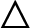

 Conditional Design Manifesto (2008) by Luna Maurer,
Roel Wouters, Jonathan Puckey and Edo Paulus
Conditional Design • 2008
In 2008, the term ‘Conditional Design’ was formulated by Amsterdam based designers, Luna Maurer, Roel Wouters, Jonathan Puckey and Edo Paulus. Through methods of computation thinking, they design frameworks with logic as an alternate way of problem-solving.
2Armstrong, Helen, and Zvezdana Stojmirovic. Participate: Designing with User-Generated Content. Princeton Architectural Press, 2011, pp. 136.
Alternate way of thinking

Much like the logic found in programming, precise instructions would function as a line of code. Computational thinking helps to break down complex problems systematically into steps.
Manifesto

Their practices aim to shift their designers’ ways of working to correspond with the change in this technologically driven society. This makes it relevant for designers to embrace the change in environment due to the way its methodologies are created.
PROCESS, LOGIC AND INPUT

Through methods of computation thinking, they design frameworks with logic. However, though clarity and precision was made around conditions they ensure to leave sufficient loopholes. Unlike design thinking which is outcome based, Conditional Design focused on the process itself. The input comes from participants responding to the given conditions that would result in unexpected outcomes.
Fungus Series • 2008 – 2016

Ultramarine Fungus for P!, NADA Miami Beach, 2014.
Fungus Series by Studio Moniker1, it requires the participants to connect their given stickers onto another by its ends. This activity encourages participants to think creatively while involving them in the making process as co-authors.
Due to its conditions, it is inevitable that participants are required to reflect and respond to existing stickers that have already been placed before them. They are to consider their actions, to copy or not, to react in contrast, or perhaps take part in a pattern2. Therefore, it is nearly impossible for participants to achieve arbitrary outcomes as it is required of them to relate to others.


Participants who collaborated as a group had higher control to form a design as opposed to individual participants. On the other hand, there are 'hackers' who found a creative way to respond to the conditions. Through a designed framework, it is nowhere near rigidity as the input is the participants themselves which would result in unexpected outcomes. This challenges participants to expand their creativity to think within the box, in which are written conditions. With this in mind, it shows how Conditional Design can introduce algorithmic thinking in a creative way that could help better understand digital literacy for design students who are interested.